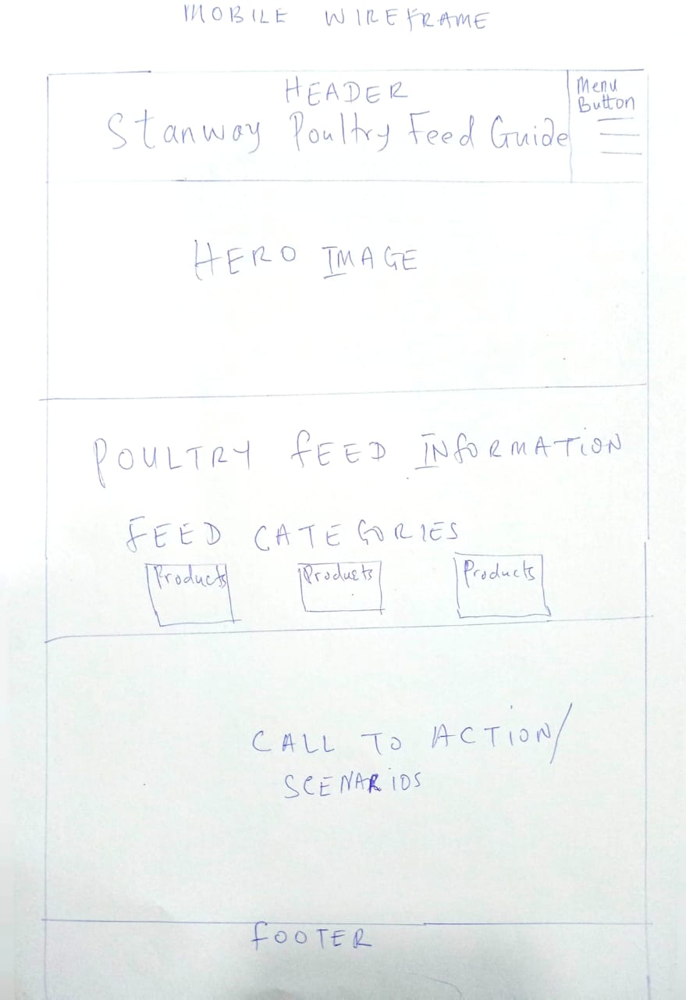
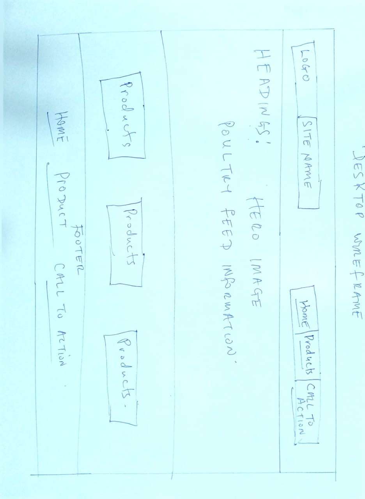

Site Name
Stanway Poultry Feed Guide
I chose this name because I want the website to be connected to the Stanway name. It also tells visitors what they will find on the website, which is information about poultry feed.
Possible domain name: stanwaypoultryfeed.com
Site Purpose
This website is created to help inform and educate poultry farmers to learn more about feeding their birds. It will provide information on different types of poultry feed, the ingredients used to make them, and what poultry birds need at each stage of growth. It will also introduce basic feed formulation and share tips on how farmers can manage feeding costs while keeping their birds healthy.
Scenarios
Some questions visitors may have include:
- What should I feed my broiler chickens at each stage of their growth?
- What ingredients do I need to make poultry feed?
- How can I reduce the cost of feeding my birds?
- What is the difference between broiler feed and layer feed?
Color Schema
I chose green and cream because they give the website a natural look that fits the topic of poultry farming.
Dark Green
This will be used for headings, navigation, and buttons.
Light Green
This will be used for cards and highlighted sections.
Cream
This will be used as the main page background.
Dark Gray
This will be used for paragraphs and other text.
Typography
Roboto Slab
I will use Roboto Slab for the main headings and section titles of this page.
Roboto
I will use Roboto for paragraphs and other text because it is simple and readers friendly.
Wireframes
These sketches show how I plan to arrange the homepage on mobile phones and desktop computers.
Mobile View

Desktop View
